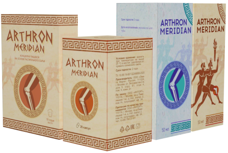

- целебная сила 4 компонентов быстро
избавит от боли в суставах!



Научная формула*
из коллагена, витаминов и экстрактов целебных растений вернет здоровье спины и суставов за 4 недели
Заказать Arthron Meridian*100% эффективная формула, доказано клинически